Troi dal Cuelát
NUOVO
Salita dal versante di Raibl
Snobbate sia dagli alpinisti, in quanto troppo mugose e selvatiche, sia dagli escursionisti, per via delle non trascurabili difficoltà alpinistiche, le Cinque Punte non sono granché frequentate, eccetto forse le prime due, che vedono una discreta presenza di salitori dal lato della Capanna Cinque Punte.
Più intrigante è l'accesso diretto, a tutte e cinque le Punte, dal versante di Raibl: tipiche vie di camosci su per i costoni mugosi, pieni di salti e orridi canali, che sorreggono le Punte - vie peraltro conosciute da sempre dai valligiani.
Si aveva voglia di fare una cosa breve per una volta, e anche per cambiare un po' zona, abbiamo puntato alla Terza Punta.
Partiamo dal canal Bosco Nero.
Fa sempre piacere scoprire belle nuove crode (Mali e Veliki Grintavec).
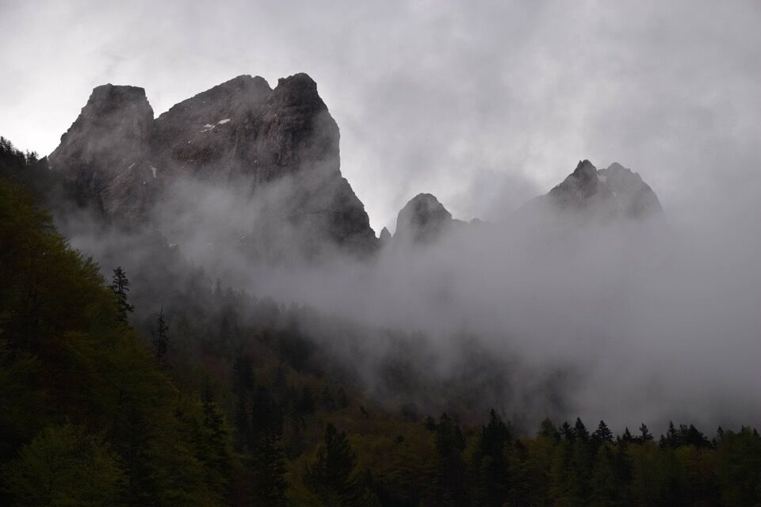Già la salita al bivacco è di una ripidità sorprendente.
Il bellissimo bivacco Oscar Piusi.
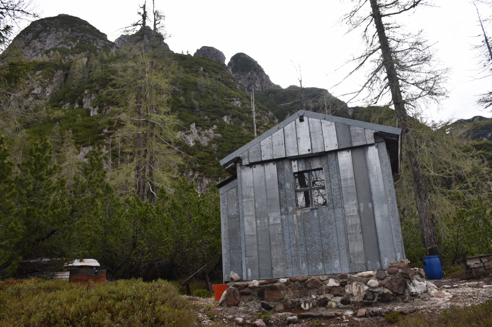Sullo spallone boscoso in basso si vede il tetto del bivacco.
I° Punta di Raibl.
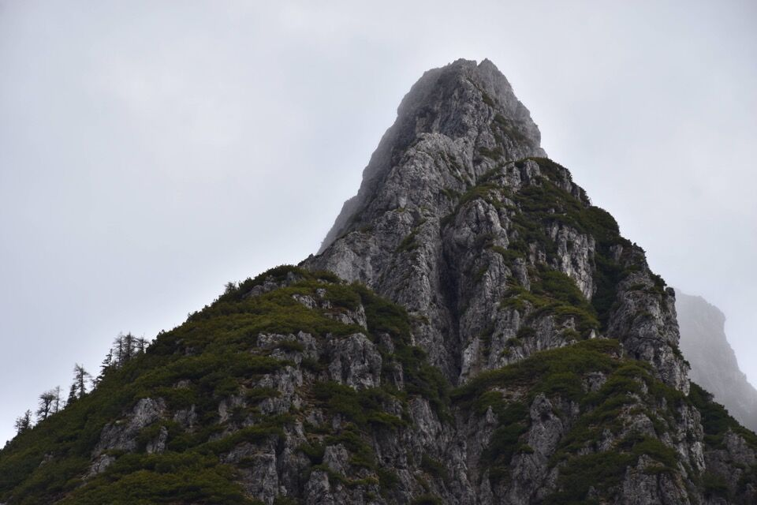 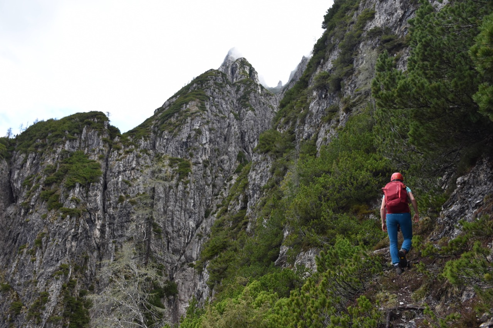Le Vette Scabre, piene di vestigia di guerra.
I selvaggi costoni che salgono verso la IV° e la V° (e VI° ?) Punta.
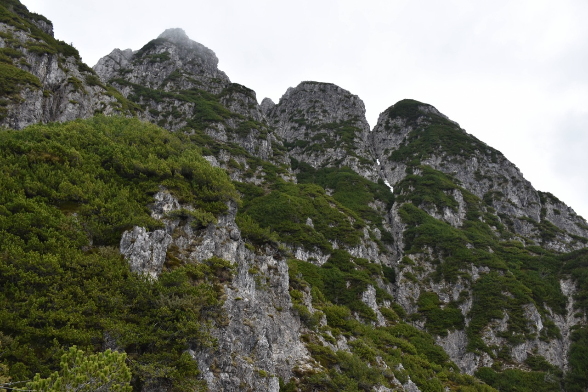Punto chiave della salita, un colatoio di II bello tirato.
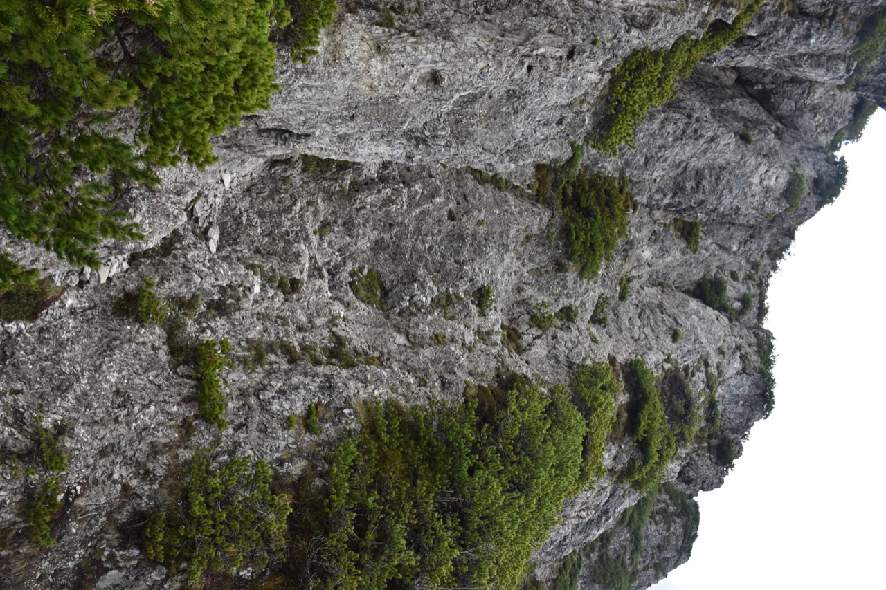 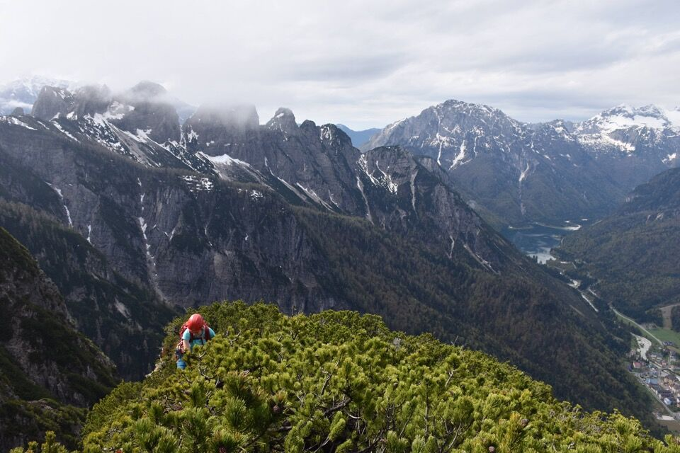I° e II° Punta.
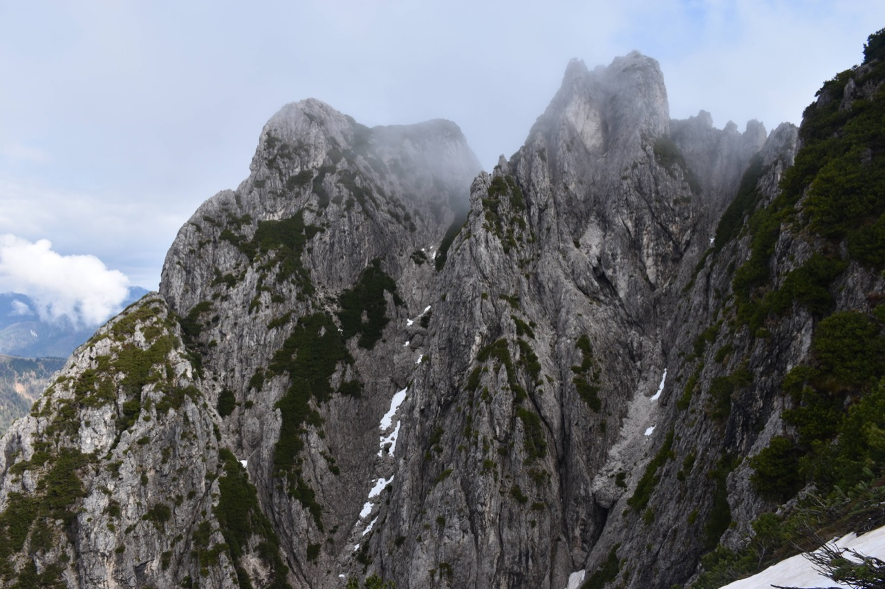Ormai prossimi alla III°.
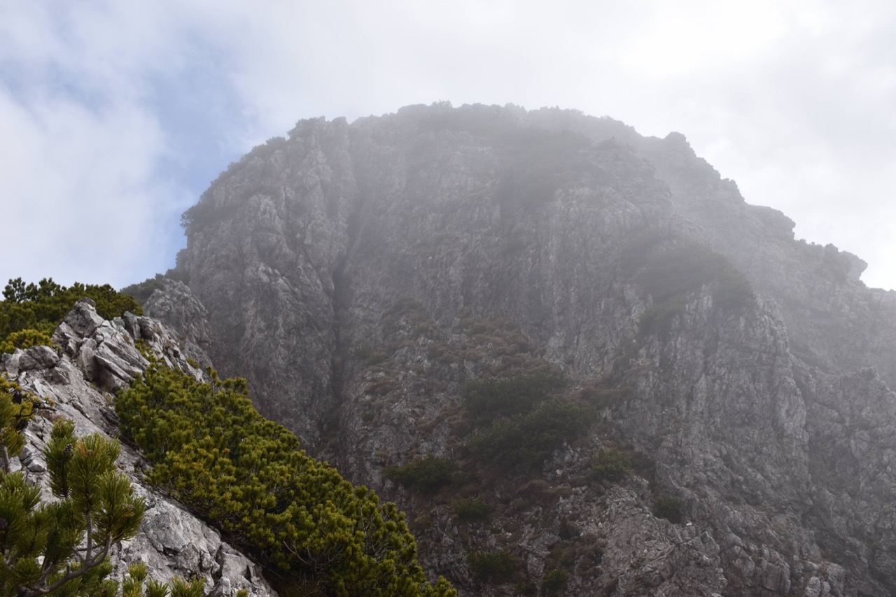 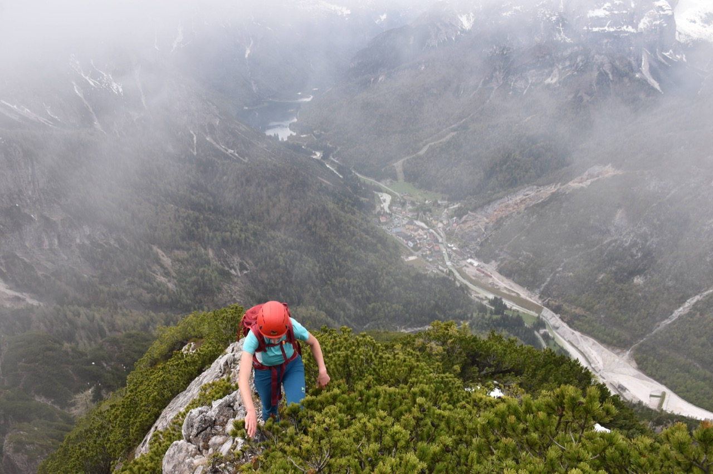Dalla cima verso I° e II°...
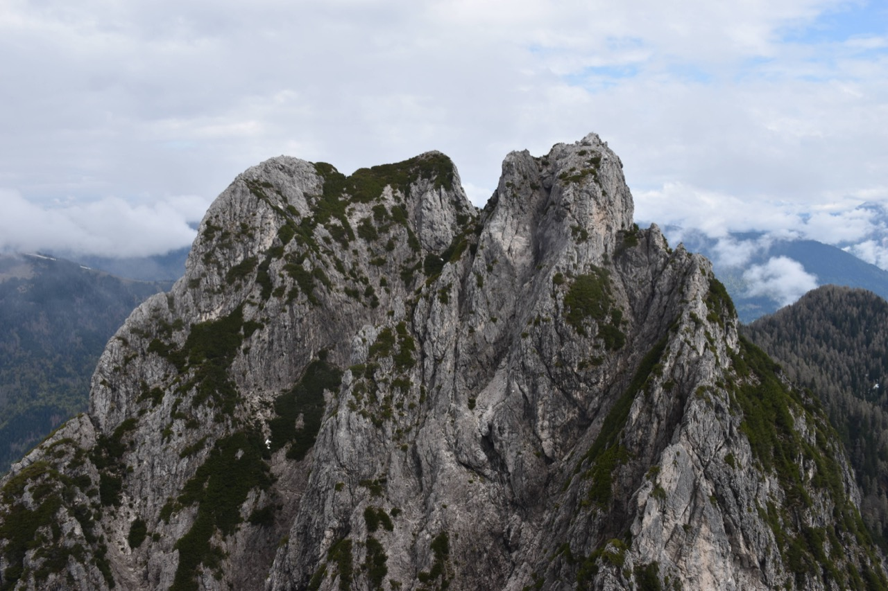e verso VI° e V°.
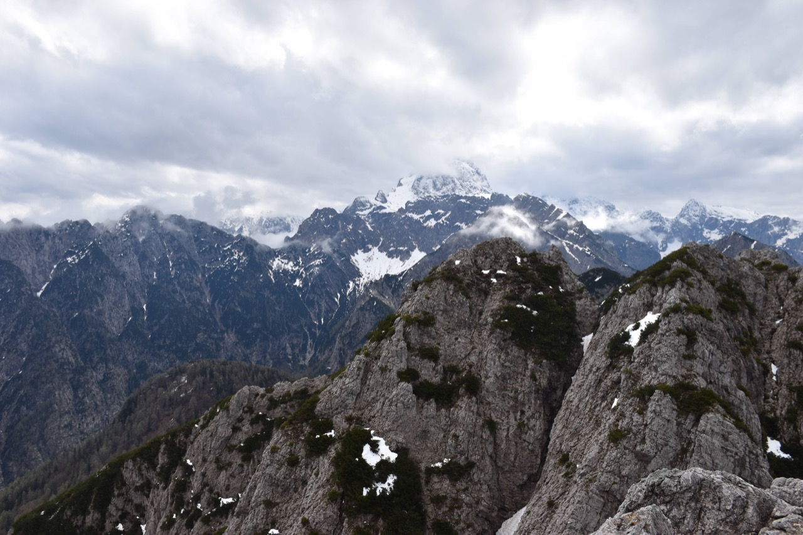Il misterioso gruppo del Breitkofel, tutto in territorio italiano, che divide la Valromana dalla conca di Fusine. Tutti che salgono sul Picco di Mezzodì ma non ce n'è uno che fotografi queste crode, che altro non sono che la continuazione verso Nord del Picco. Mi ci è voluto un po', ma ho scoperto che qualche sloveno saltuariamente ci sale. C'è pure del materiale in letteratura, ma di difficile reperimento.
Verso Ortigara, con il bel bosco dove sorge la Capanna Cinque Punte.
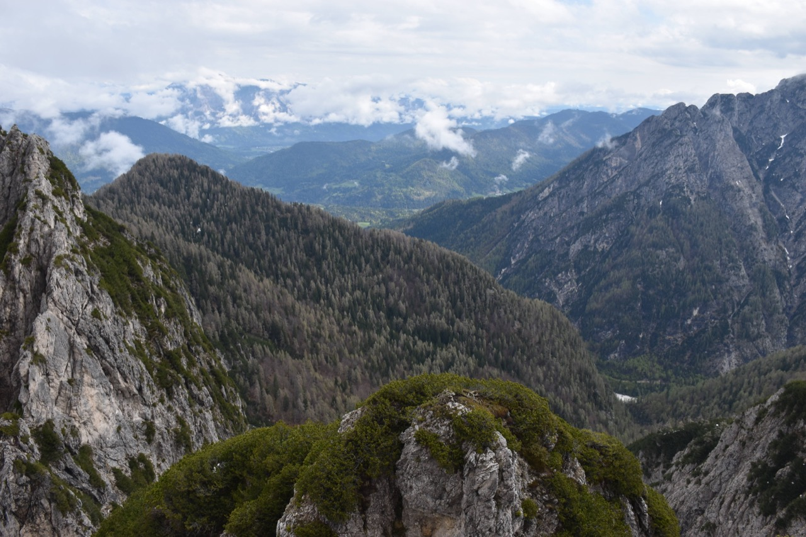L'imponente Testa del Lago (così chiamano a Raibl la Cima del Lago) con il mitico Canale dei Camosci.
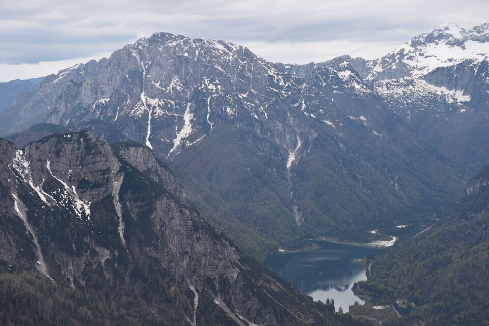Ci tocca scendere: purtroppo tocca fare la stessa strada dell'andata. Non sono a conoscenza di vie alternative fattibili.
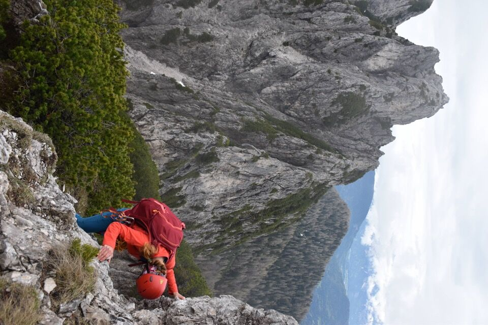
Trafficando con corde doppie.
Tornati giù ci rinfreschiamo nel fiume, guardando con soddisfazione il percorso fatto.